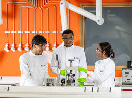
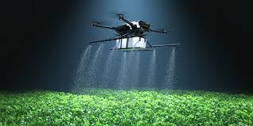

Shape what comes next
Pick Your Own Course
Explore programmes that match your strengths, interests, and future goals. Explore programmes ↓A.E CONNECT programme guide
You are in control of your direction
Inspired by “YOU ARE IN CONTROL: PICK YOUR OWN COURSE”
Choosing the right programme is one of the most important decisions you will make as a student. Remember that Core Mathematics, English Language, Integrated Science, and Social Studies are compulsory for all SHS students. The programme you choose can influence the university courses you qualify for, the careers available to you, and the opportunities you can pursue in the future. Explore the programmes below to discover subjects, university pathways, career opportunities, and future possibilities.
Explore your options
Find a programme that fits you
Search by programme, subject, career interest, or a skill you want to develop.
Showing all 7 programmes

General Arts
Explore humanities, social sciences, languages, governance and communication.

General Science
Perfect for students interested in medicine, engineering, research and technology.

Business
Learn accounting, management, entrepreneurship and finance.

Home Economics
Develop practical knowledge in food, nutrition, textiles and management.
Technical
Build engineering, construction, design and technical problem-solving skills.

Agriculture
Learn about food production, agribusiness and sustainable farming.

Visual Arts
Develop creative skills in design, drawing, sculpture and visual communication.
No matching programme found
Try another programme, career, subject, or interest.